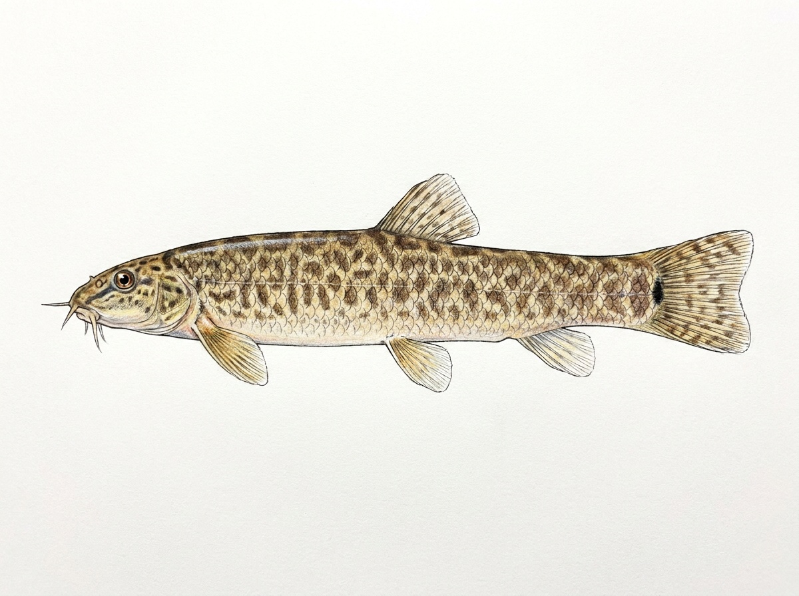

Spotted Loach
Lepidocephalichthys jonklaasi
The Spotted Loach is a small freshwater fish endemic to Sri Lanka, found mainly in slow-moving streams, marshes, floodplain wetlands, and shallow freshwater habitats of the island’s wet zone. It prefers soft sandy or muddy bottoms with dense aquatic vegetation and leaf litter, where it can burrow into the substrate for shelter and protection. This peaceful bottom-dwelling species is mostly active during the evening and night, spending much of the day concealed beneath the substrate or among aquatic plants. It feeds on insect larvae, worms, tiny crustaceans, algae, and other small organisms found on or within the sediment. Its spotted body pattern provides excellent camouflage, helping it avoid predators in its natural habitat. As a species found only in Sri Lanka, the Spotted Loach is an important component of the island’s endemic freshwater fish fauna. Because it relies on clean wetlands and undisturbed stream habitats, it is vulnerable to pollution, wetland drainage, and habitat degradation, highlighting the importance of conserving Sri Lanka’s freshwater ecosystems.